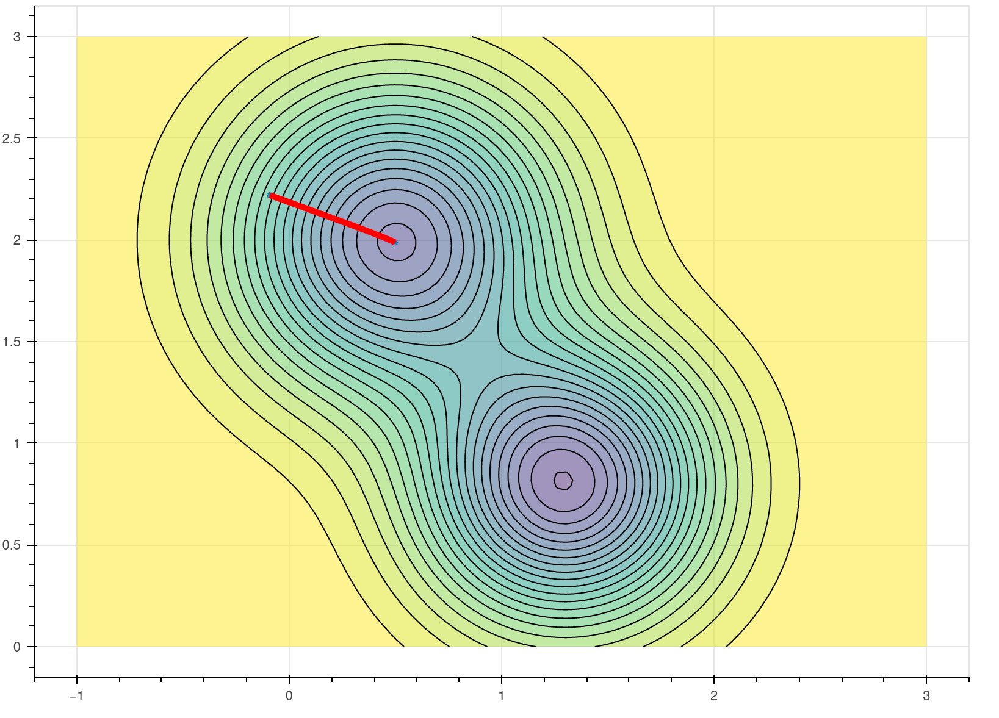
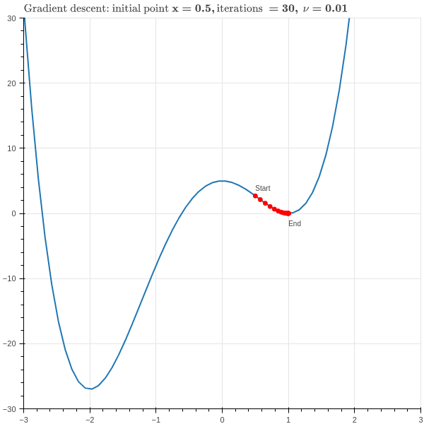

6 Gradient Descent
6.1 Introduction
A common mathematical theme throughout machine learning is the problem of finding the minimum or maximum value of a function. For example, in linear regression, we find the “best-fitting” linear function by identifying the parameters that minimize the mean squared error. In principal component analysis, we try to identify the scores which have the greatest variation for the given set of data, and for this we needed to maximize a function using Lagrange multipliers. In later lectures, we will see many more examples where we construct the “best” function for a particular task by minimizing some kind of error between our constructed function and the true observed values.
In our discussion of PCA and linear regression, we were able to give analytic formulae for the solution to our problems. These solutions involved (in the case of linear regression) inverting a matrix, and in the case of PCA, finding eigenvalues and eigenvectors. These are elegant mathematical results, but at that time we begged the question of how to actually compute these quantities of interest in an efficient way. In this section, we will discuss the technique known as gradient descent, which is perhaps the simplest approach to minimizing a function using calculus, and which is at the foundation of many practical machine learning algorithms.
6.2 The Key Idea
Suppose that we have a function \(f(x_0,\ldots, x_{k-1})\) and we wish to find its minimum value. In Calculus classes, we are taught to take the derivates of the function and set them equal to zero, but for anything other than the simplest functions this problem is not solvable in practice. In real life, we use iterative methods to find the minimum of the function \(f\).
The main tool in this approach is a fact from multivariate calculus.
Proposition: Let \(f(x_0,\ldots, x_{k-1})\) be a function and let \(\nabla f\) be its gradient. Then at each point \(x\) in \(\R^{k}\), the gradient \((\nabla f)(x)\) is a vector that points in the direction in which \(f\) is increasing most rapidly from \(x\) and \((-\nabla f)(x)\) points in the direction in which \(f\) is decreasing most rapidly. If \(\nabla f=0\) at \(x\) then \(x\) is a critical point of \(f\).
This fact arises from thinking about the directional derivative of a function.
The directional derivative \(D_{v}f\) measures the rate of change of \(f\) as one moves with velocity vector \(v\) from the point \(x\) and it is defined as \[
D_{v}f(x) = \frac{d}{dt}f(x+tv)|_{t=0}
\] From the chain rule, we can compute that \[
D_{v}f(x) = \sum_{i=0}^{k-1} \frac{\partial f}{\partial x_{i}}\frac{dx_{i}}{dt} = (\nabla f)\cdot v
\] where \[
\nabla f = \left[\frac{\partial f}{\partial x_{i}}\right]_{i=0}^{k-1}
\] is the gradient of \(f\).
The directional derivative \(D_{v}(f)=(\nabla f)\cdot v\) measures the rate of change of \(f\) if we travel with velocity \(v\) from a point \(x\). To remove the dependence on the magnitude of \(v\) (since obviously \(f\) will change more quickly if we travel more quickly in a given direction), we scale \(v\) to be a unit vector. Then, since \[ \nabla f\cdot v=\|\nabla f\|\|v\|\cos\theta=\|\nabla f\|\cos \theta \] where \(\theta\) is the angle between \(v\) and \(\nabla f\), the dot product giving the rate is maximized when \(v\) is parallel to \(\nabla f\). If \(v\) is opposite to \(\nabla f\), the dot product is minimized.
6.3 The Algorithm
To exploit the fact that the gradient points in the direction of most rapid increase of our function \(f\), we adopt the following strategy. Starting from a point \(x\), compute the gradient \(\nabla f\) of \(f\). Take a small step in the direction of the gradient – that should increase the value of \(f\). Then do it again, and again; each time, you move in the direction of increasing \(x\), but at some point the gradient becomes very small and you stop moving much. At that moment, you quit. This is called “gradient ascent.”
If we want to minimize, not maximize, our function, then we want to move opposite to the gradient in small steps. This is the more common formulation.
Algorithm 6.1 (Gradient Descent Algorithm) Given a function \(f:\mathbb{R}^{k}\to \mathbb{R}\), to find a point where it is mimized, choose:
- a starting point \(c^{(0)}\),
- a small constant \(\nu\) (called the learning rate)
- and a small constant \(\epsilon\) (the tolerance).
Iteratively compute \[ c^{(n+1)}=c^{(n)} -\nu\nabla f(c^{(n)}) \] until \(|c^{(n+1)}-c^{(n)}|<\epsilon\).
Then \(c^{(n+1)}\) is an (approximate) critical point of \(f\).

The behavior of gradient descent, at least when all goes well, is illustrated in Figure 6.1 for the function \[ f(x,y) = 1.3e^{-2.5((x-1.3)^2+(y-0.8)^2))}-1.2e^{-2((x-1.8)^2)+(y-1.3)^2)}. \] Figure 6.1 is a contour plot, with the black lines at constant height and the colors indicating the height of the function. This function has two “pits” or “wells” indicated by the darker, “cooler” colored regions. The red line shows the path that the gradient descent algorithm takes, from a higher, “hotter” region to a lower cooler one.
To get a little more perspective on gradient descent, consider the one-dimensional case, with \[ f(x)=3x^4+4x^3-12x^2+5. \] This is a quartic polynomial whose graph has two local minima and a local maximum, depicted in Figure 6.2.

In this case the gradient is just the derivative \[ f'(x)=12x^3+12x^2-24x \] and the iteration is \[ c^{(n+1)} = c^{(n)}-12\nu((c^{(n)})^3+(c^{(n)})^2-2c^{(n)}). \]
From this simple example we can see the power and also the pitfalls of this method. Suppose we choose \(x_0=.5\), \(\nu=.01\), and do \(30\) iterations of the main loop in our algorithm. The result is shown in Figure 6.3 .

As we hope, the red dots quickly descend to the bottom of the “valley” at the point \(x=1\). However, this valley is only a local minimum of the function; the true minimum is at \(x=-2\). Gradient descent can’t see that far away point and so we don’t find the true minimum of the function. One way to handle this is to run gradient descent multiple times with random starting coordinates and then look for the minimum value it finds among all of these tries.
Gradient descent can fail more spectacularly if we choose an unfortunate combination of learning rate and starting point.